It was a daring plan: Klaus-Günter Jacobi helped his best friend flee East Germany by smuggling him across the Berlin Wall – the barrier that divided a city and a country – in a modified BMW Isetta. You can read his incredible story here.
The Bornholmer Street border crossing in the 1960s. The bridge separated East and West Berlin.
"I was focused on doing just one thing – getting my buddy out of there."
Klaus-Günter Jacobi
May 23 1963. A gloomy and rainy evening. In front of the border crossing at Bornholmer Street sits a BMW Isetta. The driver wants to cross the heavily guarded border between East and West Berlin. A line of cars is backed up, waiting at the border checkpoint on the East German side. The nervousness of both the drivers and the soldiers is palpable. Guard dogs bark. After more than an hour the Isetta finally pulls up to the barrier. Grim-faced border guards check papers and inspect the car. Every moment is agony for the young driver – and even more so for the stowaway passenger hidden in the Isetta's tiny engine bay. Muffled voices from outside drift through the air to his cramped hiding place. Only a few millimeters of metal protect him from the searching eyes of the guards. Suddenly the engine hatch door opens and a flashlight shines inside. He holds his breath… If the guards find him now his attempted flight to freedom will earn him a one-way ticket to an East German jail.
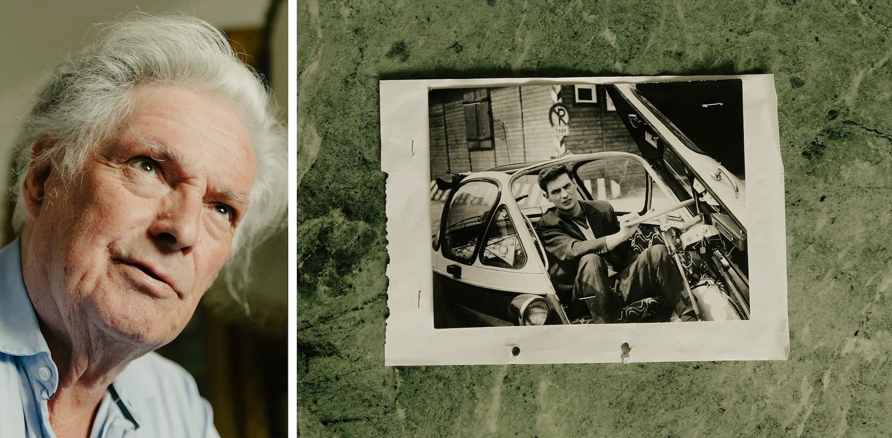
The great escape: Klaus-Günter Jacobi modified his BMW Isetta to help his best friend flee East Germany.
Fast forward to Berlin in October 2019, 30 years after the fall of the Berlin Wall
Klaus-Günter Jacobi – 6 foot 5 with a mane of white hair – sits at a round table with a green granite top. The 79-year-old welcomes us into his 322 square foot apartment in Berlin for the interview. It's furnished with wooden wardrobes, cane chairs covered with sheepskins and a small, old and dusty tube television. From the balcony you can just make out Teufelsberg in the distance. Teufelsberg, or Devil's Mountain, was a spy station during the Cold War where the US listened in on and jammed the radio signals coming from the Eastern Bloc controlled by the Soviet Union.
Jacobi likes his view. It reminds him of how closely the history of the two Germanies is linked with his own.
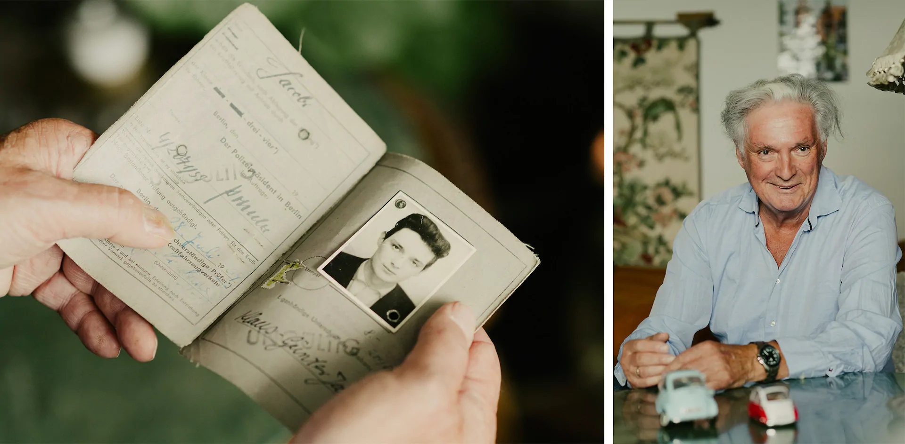
Absolute freedom: the BMW Isetta opened up the world to young Jacobi. Left: his driver's license from 1967.
Escape from East Germany cost some their lives
Klaus-Günter Jacobi was born in Pankow, a borough of East Berlin, in 1940. His father was an army officer and his mother was a housewife. After the war the East German Communist Party came to power and dictated the modest existence of the family. “We always hoped it would get better,” says Jacobi, “but it never did.”
In October 1958, as the Party did away with ration cards and those who criticized the system were increasingly denounced as enemies of the state, the Jacobis packed their bags and fled. From their new home in West Berlin they watched as things grew worse – how East Germany was taking away its citizens' freedom of movement by putting up stone walls with barbed wire; how East Berliners were digging tunnels or trying to ram trucks through what East Germans called the “Anti-Fascist Protection Rampart” to get to freedom; how the escape of many East Germans failed, landing them in prison. At least 140 people died at the Berlin Wall, many of whom were shot by the East German border patrol.
HISTORICAL OVERVIEW
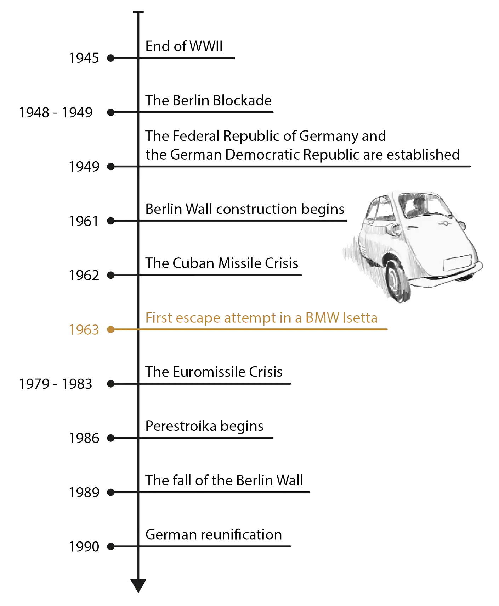
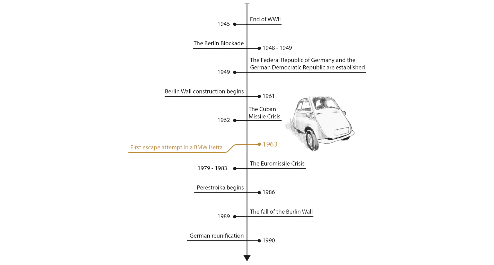
While the Jacobis fled, Manfred Koster chose to remain. The two boys had played together in the street when they were children and attended the same school. Maybe Manfred Koster hung onto the idea of socialism a little longer; maybe he just didn't want to leave home. But he certainly remained in the Soviet Occupation Zone too long after his friend left.
Escaping across the Berlin Wall is too risky
In November 1962, a little over one year after the Wall had gone up, Manfred Koster was drafted into East Germany's National People's Army. He was to report for duty on June 1 1963. As a staunch pacifist he felt anything was better than that – and decided to defect. He had had enough of East Germany, the way it spied on and suppressed its own citizens. They had taken his freedom away, so there was nothing left for him but to leave.
The newly built wall made escape almost impossible. The risk of climbing over it, being discovered and shot was too high. Koster would have to find another way out. Then he remembered his old friend Klaus-Günter Jacobi. Maybe he would have an idea. But how could he reach him in the other part of the city? And how could they plan escape in secret?
Koster quickly decided he needed to pay a visit to Jacobi in West Berlin. He had to find a way to sneak out. Manfred's brother Hans had already gone to live in the West at that point. So when Hans came to visit him, Manfred took Hans' West German ID and used it for one night to get across. As the brothers looked almost like twins, Manfred had no problem going to West Berlin. He showed up completely unannounced at Jacobi's door. And that is the night when Jacobi hatched the plan to use his BMW Isetta to smuggle his friend through the border.
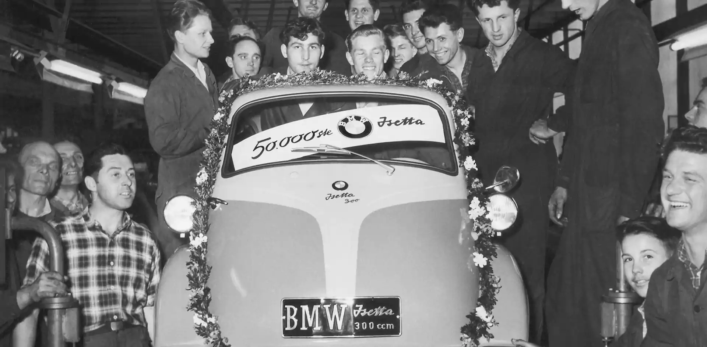
With more than 160,000 cars produced, the Isetta is the best-selling single cylinder car of all time.
A BMW Isetta makes history
Just as Klaus-Günter Jacobi's life is part of Germany's post-war history, so too is the BMW Isetta, at least in that of West Germany (➜ A little car with a big history). In those days, only two percent of the German population had the means to buy a car. So when the tiny car first hit showrooms in 1955, priced at only 2,550 German marks (about $1,450 today), most households could afford one. And even thought it only had a 13 hp engine and a maximum speed of 50 mph, it could still run – and does to this day, as classic car collectors know (➜ BMW Isetta: tips from a classic car pro).
Jacobi saw his first Isetta (also known as a “bubble car,” and a "cuddle coach" in Germany) in 1961 in the showroom window of a dealer right next to his favorite bar, The Bathtub. He paid just 1,500 marks to drive away in the little red and white BMW Isetta.
He remembers driving the car to Paris to visit his sister, chauffeuring admiring women around and perching on the seat so he could stick his head out of the sunroof, while pedestrians and other drivers gawked at him. But the one experience that stands out from all the rest is the escape from East Germany.
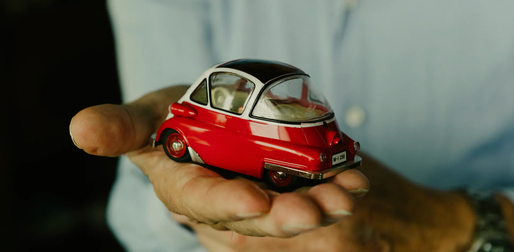
A memento: the red and white Isetta toy car stowed away in a living room cabinet looks just like the original.
"Using a BMW Isetta as an escape car – the plan was as brilliant as it was crazy."
Using a car that is a mere 55 inches wide by 90 inches long to defect from the Eastern Bloc was part genius and part insanity.
Genius because no one would ever suspect that such a little car, or the “motor with a jump seat” as it was sometimes derogatively known, would be capable of hiding a human stowaway. Larger vehicles, in contrast, were scrupulously inspected by the DDR guards, and were sometimes even measured to see whether hiding spaces had been built into them.
Insane because: how are you supposed to hide a 5-foot-7 man in a two-seater during a rigorous inspection? The guards painstakingly search the inside, and then use a mirror to check underneath the entire car. The only possibility Jacobi sees is a hollow space behind the seat that is directly next to the engine.
Luckily Jacobi had the know-how to turn his Isetta into an escape vehicle – he had trained to become a car mechanic from 1956 to 1959. He then continued his training to become a driving teacher while earning some money in the garage where he had trained. So he had a safe place to modify the car, and the garage had all the tools he would need for it: hammers, chisels, saws, and paint.
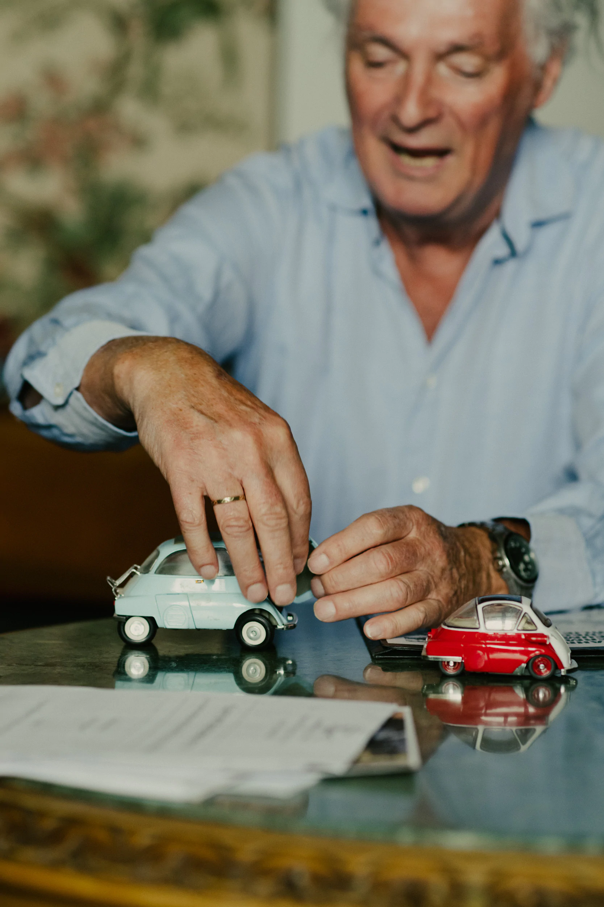
Freedom-bound: Jacobi reconstructs the route they took on the big table in his living room.
Escape car modification
Over the course of several weeks, Jacobi drove to the garage almost every evening. He had to hurry, since the day Manfred was supposed to report for induction was drawing near. The boss left the garage open late. Even his colleagues came by to see how it was going and to drink a beer. This was all well and good, but hopefully no one intended to turn them in!
“I have no idea how many hours I spent working on converting the Isetta. I was focused on doing just one thing - getting my buddy out of East Germany.”
THE MODIFICATION OF THE ISETTA AT A GLANCE
Remove the storage box behind the seat and then later weld it back in four inches higher.This frees up a space for the modifications and the stowaway.
Remove the seat and the spare tire and saw a 20-inch x 20-inch entrance hole into the pieceof sheet metal that serves as the rear panel.
Dismantle the exhaust pipe cover, and remove the air filters and everything else that takesup unnecessary space.
The technical modifications and the position of the passenger require the exhaust pipe tobe bent.
Install a floor panel out of sheet metal to the suspension to prevent the stowaway frombeing burnt by the hot exhaust.
Sand everything so it's perfectly smooth again, and cut off part of the rear fender so itdoesn't scrape the ground with the weight of the stowaway and raise suspicion.
The last modification is made on the day of the escape: the large 3.5 gallon tank, whichJacobi has already detached from its holder, is unplugged from the gas hose. A small canister,hardly bigger than an oil can, is put in the place of the tank – two quarts of gas is all he will have to get his friend over the border...
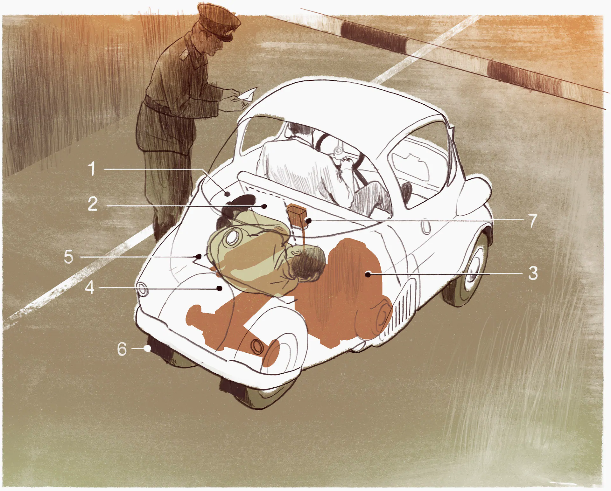
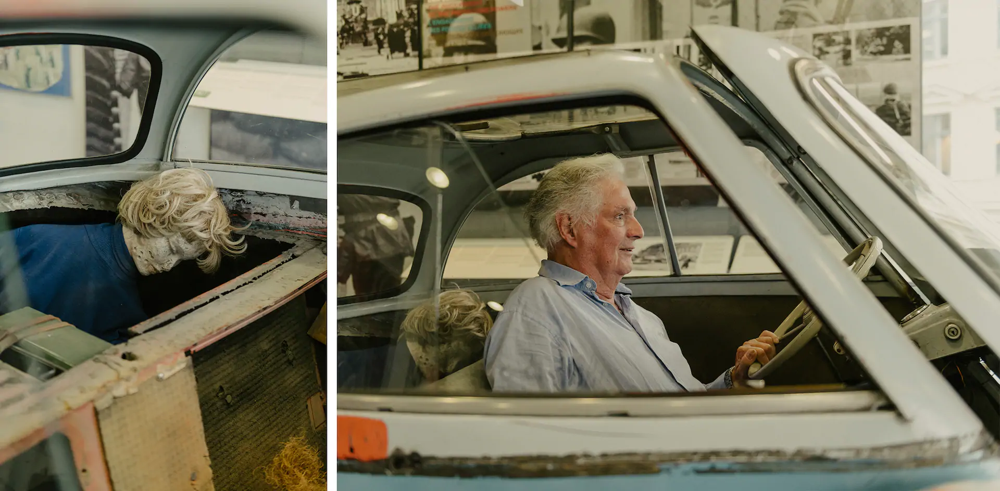
An ingenious idea: Klaus-Günter Jacobi in a replica of his “escape-Isetta” in an exhibit of the Berlin Wall Museum. His modified Isetta was more complex than the one in the exhibit.
Crossing the Berlin Wall comes with many obstacles
Jacobi's main reason for this undertaking was to help his friend – but he also enjoyed the thrill of doing something forbidden. He wanted to make a show of resistance against an unjust authoritarian state, just as he and Manfred Koster had done when they were young before the Jacobis fled to the West. While the border was still open, the two went to the West every day to buy leather gloves, coffee, pantyhose, bananas and cigarettes. They took it all back home to the East where they hawked it “very profitably,” notes Jacobi as a roguish look comes into his brown eyes when he thinks of his younger days. Spying on the border patrol, recording when the guards change shifts, mapping out the guards' patrols: this is what they did everyday. “We were practically professionals.”
But driving the car to bring his friend to freedom – this was a matter of honor. The problem was that because East Germany did not recognize West Berlin as a part of West Germany, Jacobi, as a West Berliner, was not permitted to travel into East Germany. So he had to find another driver. He found West German students who were more than willing to help organize escape attemps purely out of conviction.
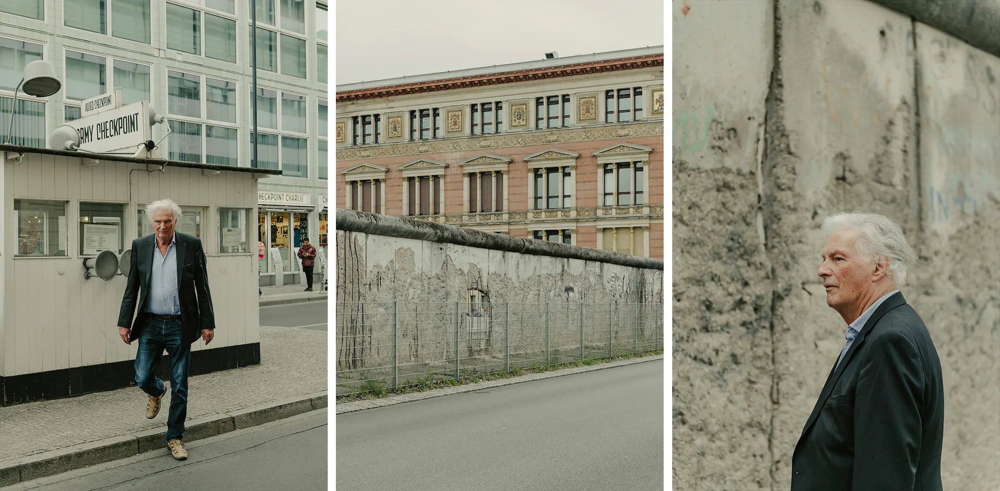
From the wall to the checkpoint: all that remains of East Germany. For many, the remnants of the wall stir up feelings of nostalgia for the way things were back then. But it only reminds Jacobi of the time when an entire people were imprisoned behind it.
Nerve-racking moments at the border checkpoint
At first there was a medical student who was going to drive the BMW Isetta. But she lost her nerve during the test drive across the border. The time waiting in the line at the border checkpoint seemed endless, and the guards' scrutiny frightened her. She backed out as soon as they were back in West Germany. “I don't hold it against her,” says Jacobi, “but it was a real shock. It was not long before Manfred was going to be called up to the army.”
Then on May 23, just a week before Manfred was supposed to report, the phone suddenly ring early in the morning. Two other students are willing to step in. They don't want to tell Jacobi their names – you can't confess something you don't know. That same day, both of the men drive to East Berlin – one in the modified Isetta, the other in a VW Beetle as back-up.
Both students meet with Koster in Pankow and drive him outside of town and down a dirt road where he can hide himself in the Isetta without anyone noticing. As Jacobi showed them that afternoon, they have to take the 3.5-gallon-tank out and replace it with the mini tank. In the failing light of the flashlight, the students take a lot longer than planned to change tanks.
The escape flounders at this point as a farmer comes by to see what's going on in his field. They tell him it's just a flat and everything is under control. Then it takes Manfred what feels like an eternity to squeeze himself into the tiny empty space. Fat raindrops beat down on the car, matching the racing rhythm of his pulse.
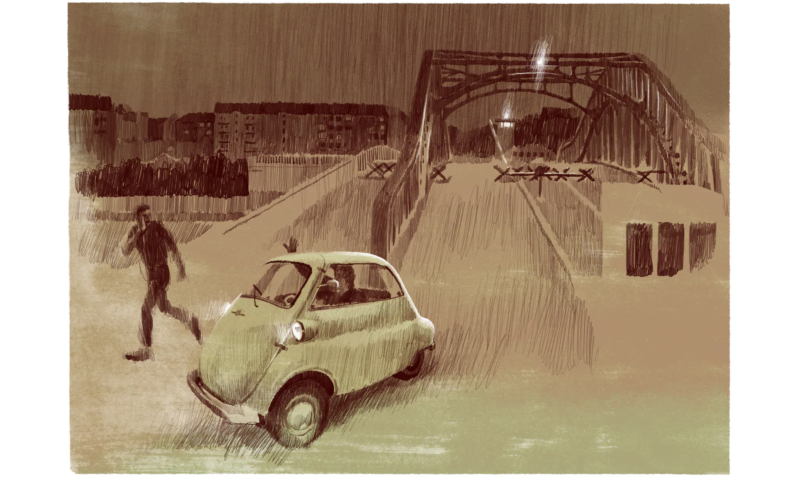
An endless wait at the border
At the same time, Jacobi is waiting on the west side of the Bornholmer Bridge, smoking one cigarette after another. He keeps looking over to the border and then at his watch. By now it's 20 minutes past 11 and they are an hour and a half late. He stamps out another cigarette butt on the asphalt. The border closes at midnight…
Then, right before midnight, the barrier goes up and both the Isetta and the VW cross the border.
After both cars passed him, he starts to run right alongside the Isetta.
In a park on Grünthaler Street, the procession comes to a halt. It takes a full five minutes for Manfred to extricate himself from the small confines. His legs are swollen, his back is aching, but it's nothing compared to the joy he feels – free at last!
THE ESCAPE ON MAY 23 1963
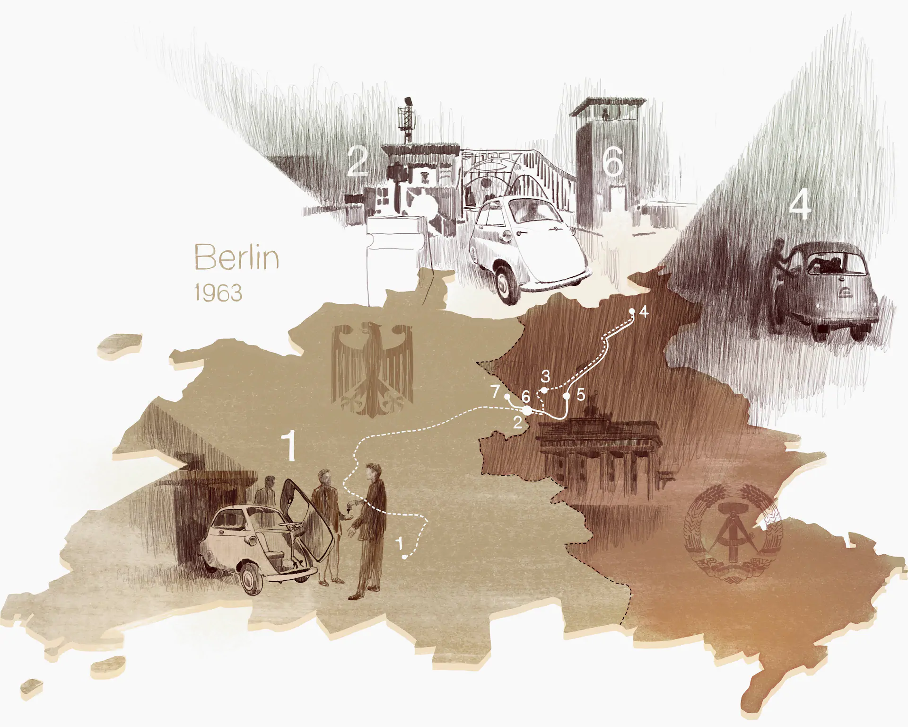
Steglitzer Damm 30 (Jacobi's apartment), 11 am. He hands over the keys to his Isetta to the two students.
Bornholmer Bridge, 3:55 pm. The students cross the border into East Germany.
Old Parish Church of the Four Evangelists, 6:05 pm. The students pick Koster up.
Karpfenteich pond in Heinersdorf, 9 pm. Koster squishes himself into the hiding spot in the Isetta.
Prenzlauer Promenade and Wisbyer Street, 10:30 pm. They drive back to the border
Bornholmer Bridge, 11:55 pm. After an hour’s wait at the checkpoint, they finally cross the border.
Park on Grüntaler Street, 12:10 am. Koster crawls out of his hiding spot a free man!
The fate of the Isetta
At some point, Jacobi gutted his Isetta and sent it to the scrap heap. After the modification it wouldn't have passed inspection anyway. The only thing that he still has today is a key to the engine hatch door. He carefully rolls it around in his hands as he reflects on his role in this story. “Sometimes there are people who determine the history of the world for just a small moment.” He is no longer in contact with Manfred Koster. They grew apart and even fought. And as time went by, they went their separate ways. But the amazing escape he engineered is something he will never forget.
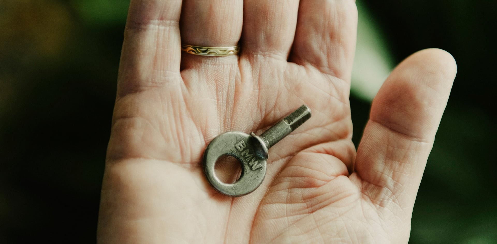
All that remains: the key to the engine hatch is all that remains of Jacobi's BMW Isetta. The rest was scrapped.
Jacobi says that the two students went on to continue their rescue mission. They used a different Isetta, but the same principle. It was 18 months later when one of their drivers was discovered: during an attempted escape the car, which was supposedly empty, started to wobble. The woman hiding was discovered and pulled out of the hiding place. The students went to the press. “Nine East Berliners escape in an Isetta” read the headline of the evening edition on October 27, 1964. They got the idea from Klaus-Günter Jacobi.
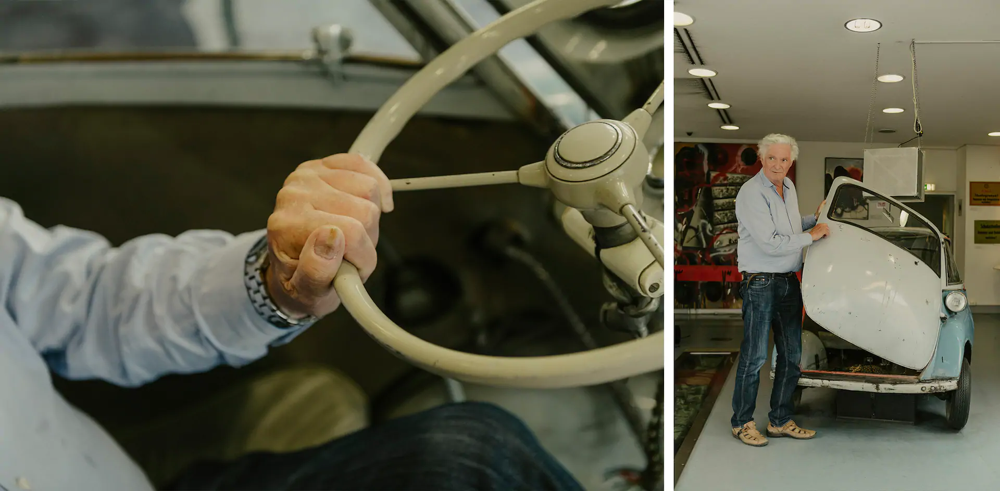
A drive down memory lane: as a museum guide, Jacobi keeps the memory of the spectacular escape in his Isetta alive.
Escape should not be forgotten
Even though it has been 30 years since the wall fell, Klaus-Günter Jacobi refuses to let go of the history of the two Germanies. Today he works as a guide in the Berlin Wall Museum on Friedrich Street. Of the more than 850,000 annual visitors, almost none are aware that the brains behind the modified escape car now sits staring out the top-story window at Checkpoint Charlie. But then, no one really needs to know, he thinks. The real achievement is that we are now aware that injustices were done – and that there were those who fought back.
“I had to sacrifice my Isetta, but it was worth it.”
The true story of Klaus-Günter Jacobi and other escapes from East Germany in BMW Isettas inspired BMW to make the short film “The Small Escape”. Click here to see the video.
Photos: Robert Rieger; Illustrations: Jan Steins; Author: Laslo Seyda
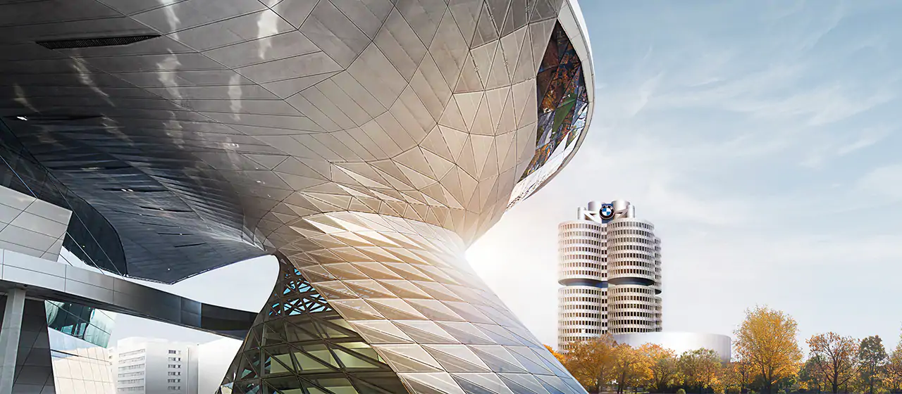
FREEDOM AND INDEPENDENCE. FOR ALL NEXT GENERATIONS.

 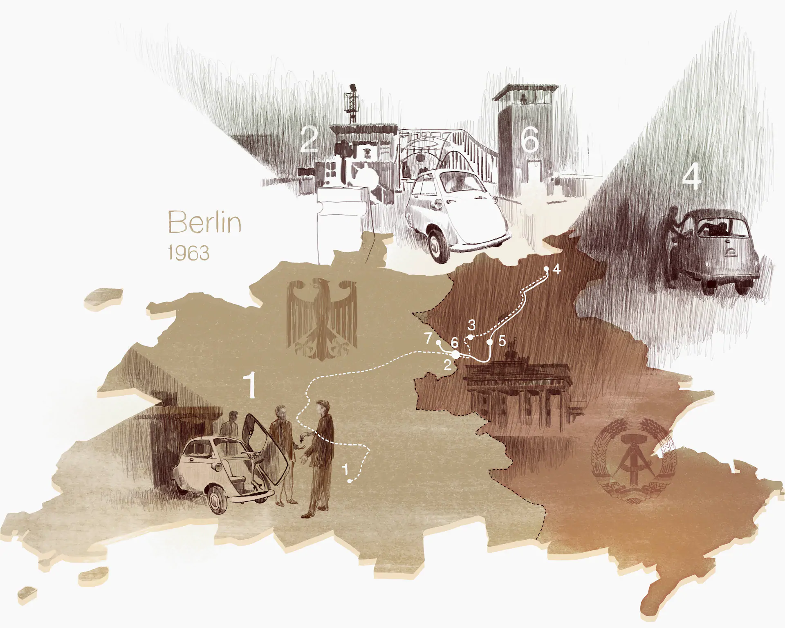
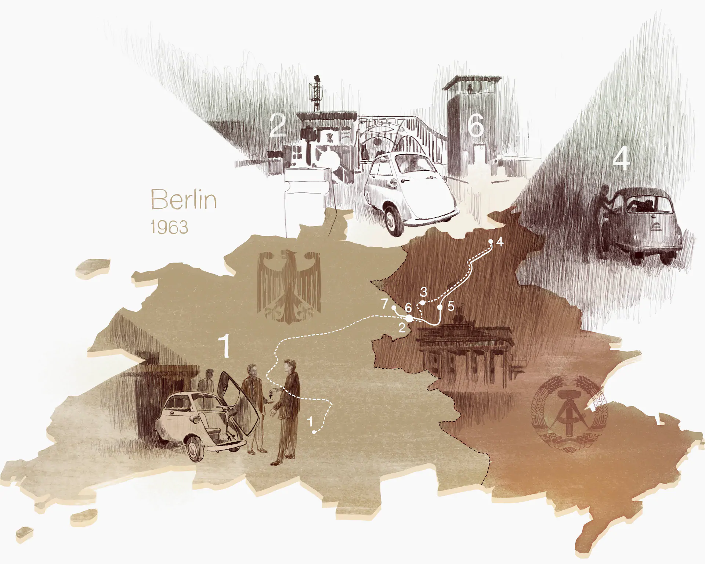
 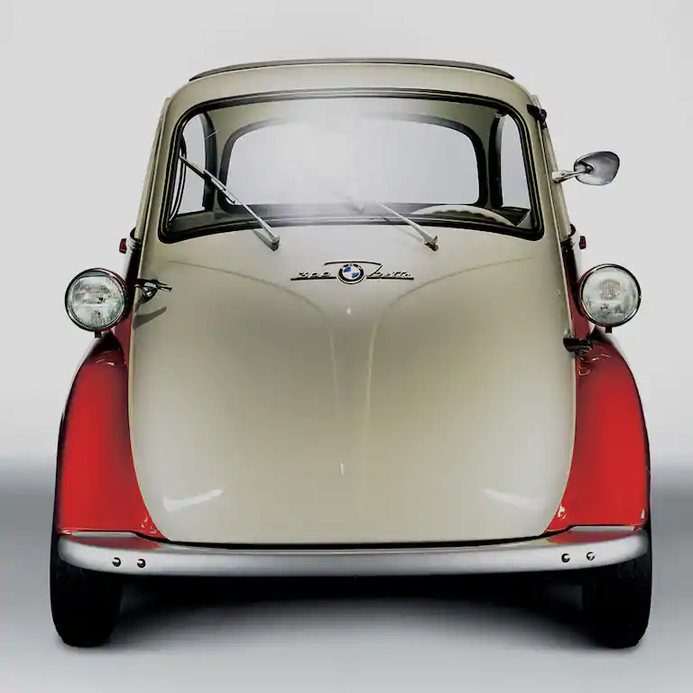
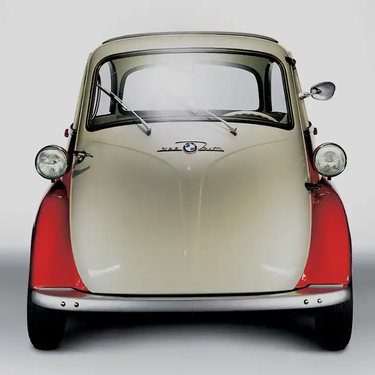